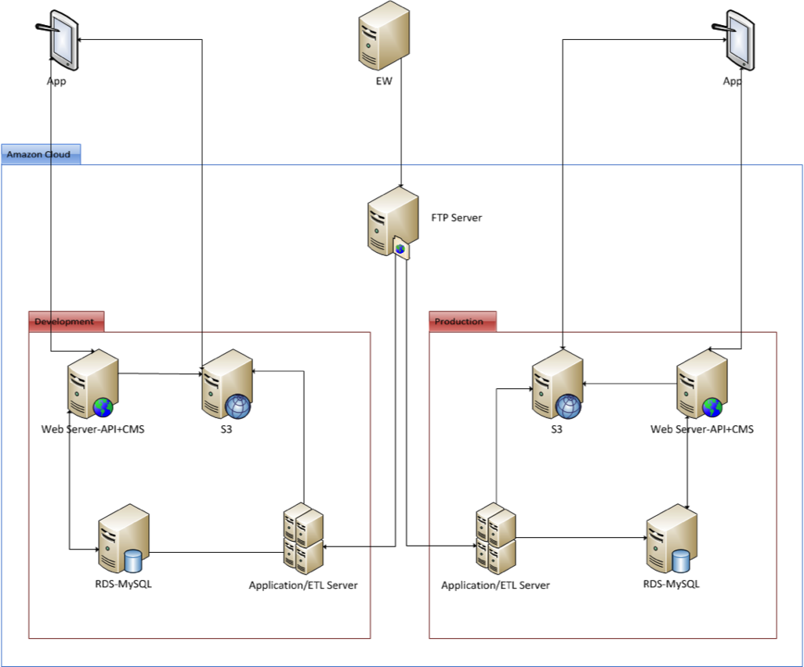
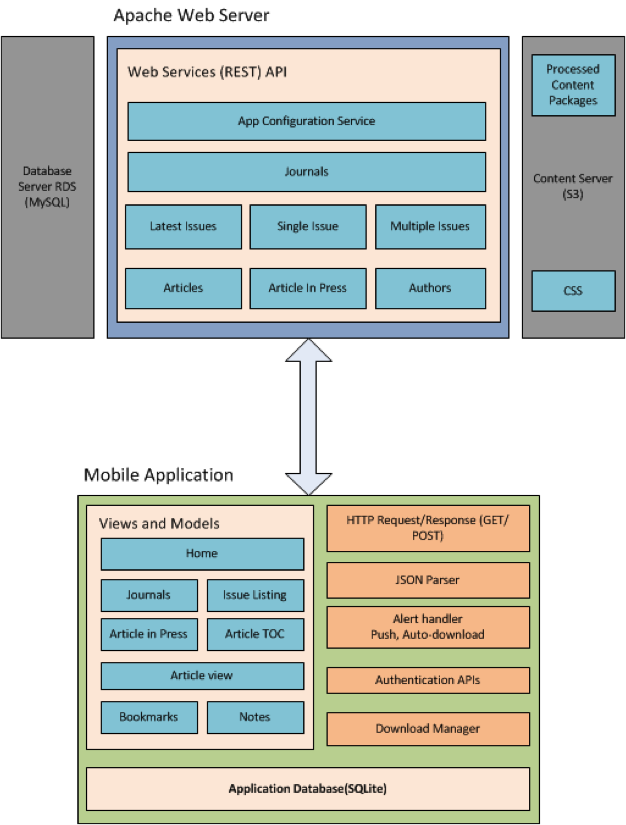
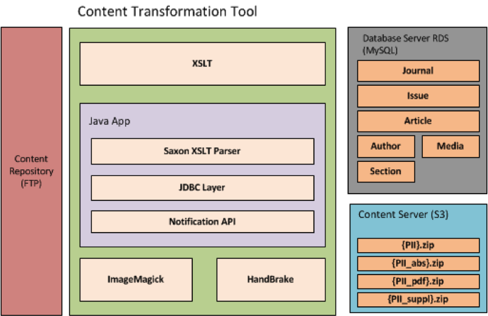
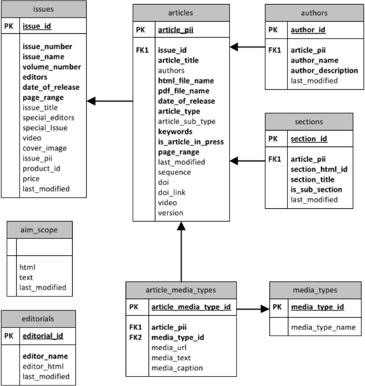
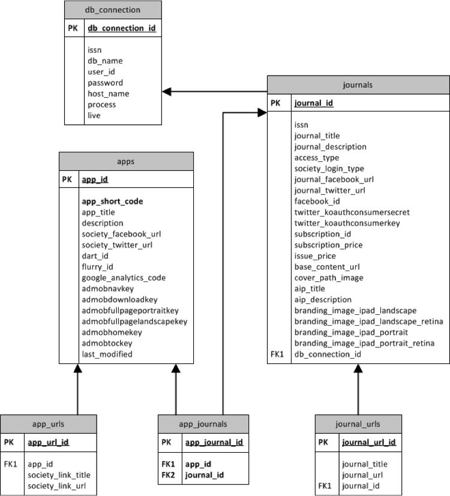
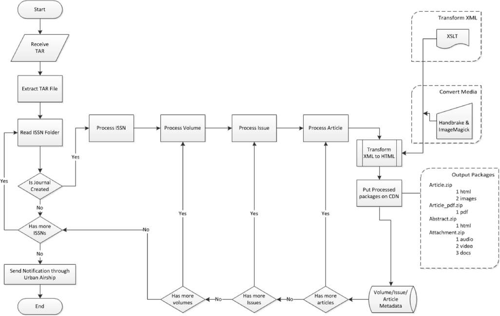
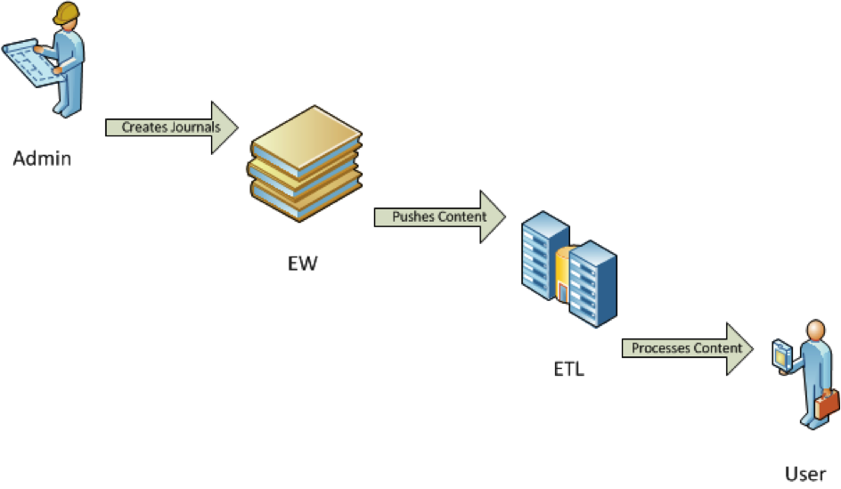

JAT 4.5 WEB Architecture Document
1. Introduction
This document contains the Web Architecture for JAT project.
1.1 Purpose of the Document
The purpose of this document is to:
- Identify various design approaches.
- Identify core modules of the system.
1.2 Server Configuration
Server configuration and software versions required:
- OS: Linux (Red Hat Enterprise Linux 6.4)
- Web Server: Apache 2.2
- Database: MySQL 5+
- Scripting: PHP 5+
- JAVA: 1.6
- ImageMagick: 6+
- HandBrake: 0.9.8
1.3 Goals and Guidelines
Primary goal of this design is to make a efficient & a scalable Web Architecture.
2. Web Architecture
2.1 Server Architecture

2.2 System Architecture

2.3 Content Architecture

3. Database Designs
3.1 Content Database Model Design

3.2 Config Database Model Design

4. Flowchart
4.1 Content Processing

5. System Process Flow
